Director Load Balancing - NetScaler 11.1
Navigation
- Monitor
- Servers
- Service Group
- Responder
- Load Balancing Virtual Server
- SSL Redirect
- SSL Warning
- CLI Commands
Monitor
- On the left, expand Traffic Management, expand Load Balancing, and click Monitors.
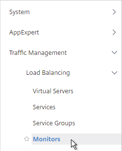
- On the right, click Add.
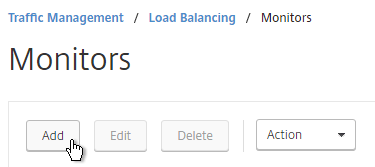
- Name it Director or similar.
- Change the Type drop-down to HTTP.
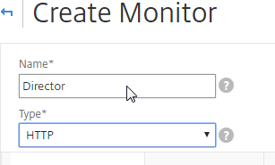
- If you will use SSL to communicate with the Director servers, then scroll down and check the box next to Secure.
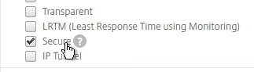
- Switch to the Special Parameters tab.
- In the HTTP Request field, enter
GET /Director/LogOn.aspx?cc=true - If Single Sign-on is enabled on Director, then you might have to add 302 as a Response Code.
- Click Create.
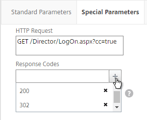
Servers
- On the left, expand Traffic Management, expand Load Balancing, and click Servers.
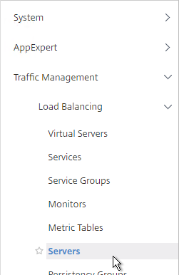
- On the right, click Add.
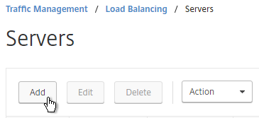
- Enter a descriptive server name. Usually it matches the actual server name.
- Enter the IP address of the server.
- Enter comments to describe the server. Click Create.
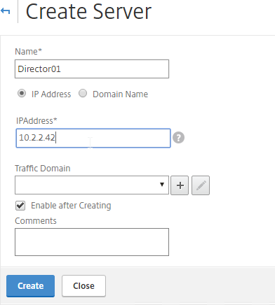
- Continue adding Director servers.
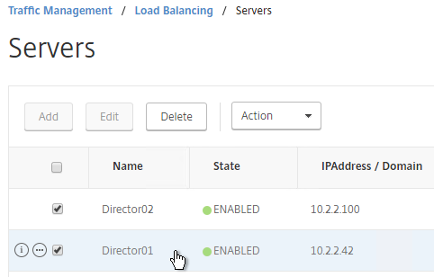
Service Group
- On the left, expand Traffic Management, expand Load Balancing, and click Service Groups.
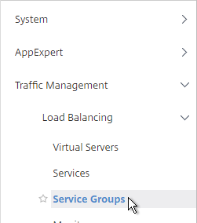
- On the right, click Add.
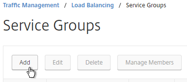
- Give the Service Group a descriptive name (e.g. svcgrp-Director-SSL).
- Change the Protocol to HTTP or SSL. If the protocol is SSL, ensure the Director Monitor has Secure enabled.
- Scroll down, and click OK.
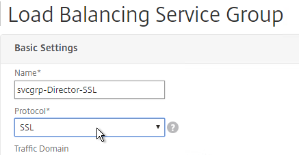
- Click where it says No Service Group Member.
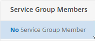
- If you did not previously create server objects, then enter the IP address of a Director Server. If you previously created server objects, then change the selection to Server Based, and select the server objects.
- Enter 80 or 443 as the port. Then click Create.
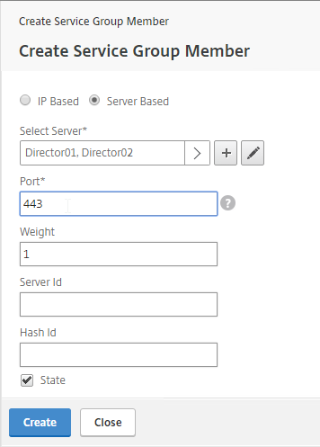
- Click OK.
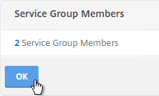
- On the right, under Advanced Settings, click Monitors.
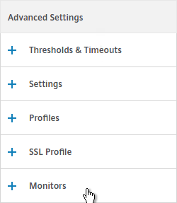
- On the left, in the Monitors section, click where it says No Service Group to Monitor Binding.
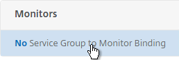
- Click the arrow next to Click to select.
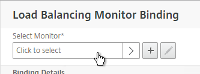
- Select the Director monitor, and click Select.
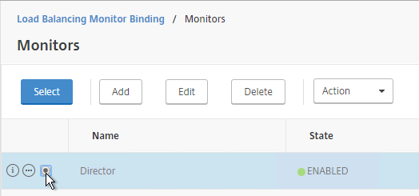
- Then click Bind.
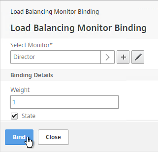
- To verify that the monitor is working, on the left, in the Service Group Members section, click the Service Group Members line.
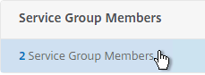
- Highlight a member, and click Monitor Details.
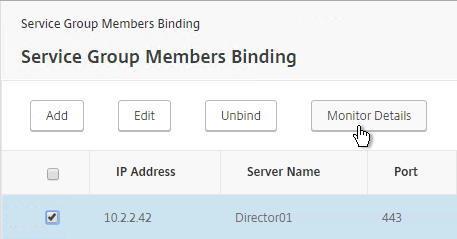
- The Last Response should be Success – HTTP response code 200 received. Click Close twice.
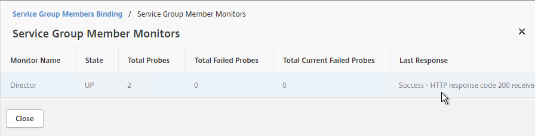
- Then click Done.
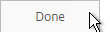
Responder
Create a Responder policy to redirect users from the root page to /Director.
- Go to AppExpert > Responder, and enable the feature if it isn’t already enabled.
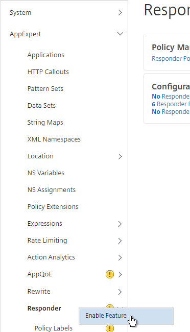
- Go to AppExpert > Responder > Actions.
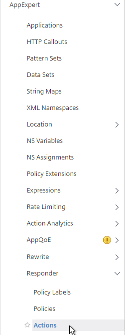
- On the right, click Add.
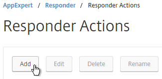
- Give the Action a name (e.g. Director_Redirect).
- Change the Type to Redirect.
- In the Expression box, enter
"/Director", including the quotes. - Click Create.
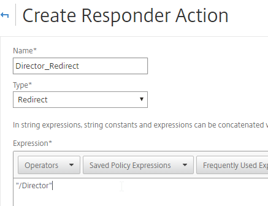
- Go to AppExpert > Responder > Policies.
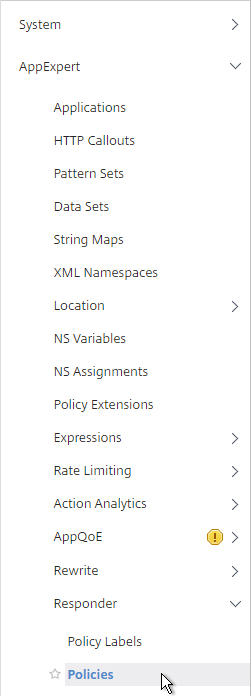
- On the right, click Add.
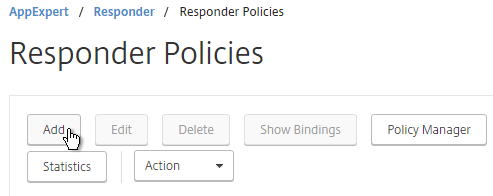
- Give the Policy a name (e.g. Director_Redirect).
- Select the previously created Action.
- In the Expression box, enter
HTTP.REQ.URL.PATH.EQ("/") - Click Create.
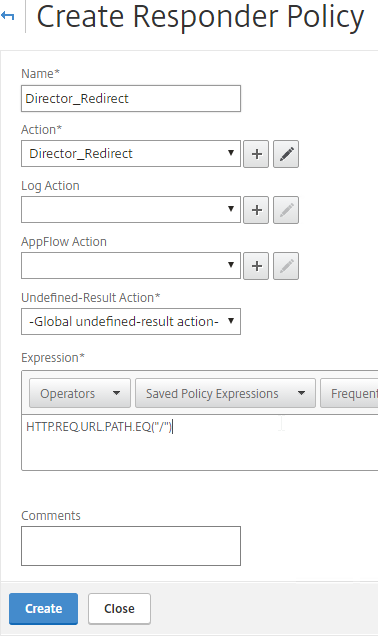
Load Balancing Virtual Server
- Create or install a certificate that will be used by the SSL Virtual Server. This certificate must match the DNS name for the load balanced Director servers.
- On the left, under Traffic Management > Load Balancing, click Virtual Servers.
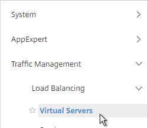
- On the right, click Add.
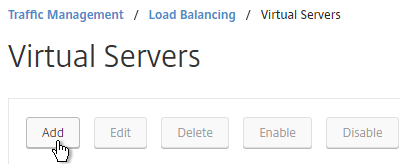
- Name it lbvip-Director-SSL or similar.
- Change the Protocol to SSL.
- Specify a new internal VIP.
- Enter 443 as the Port.
- Click OK.
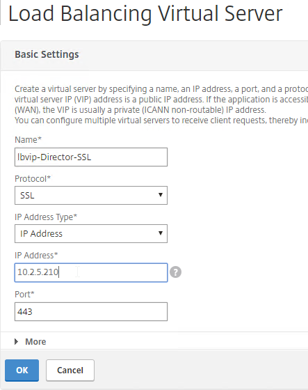
- On the left, in the Services and Service section, click where it says No Load Balancing Virtual Server ServiceGroup Binding.
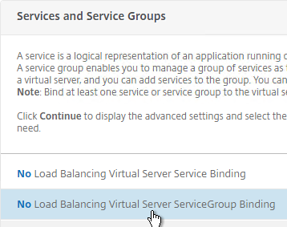
- Click the arrow next to Click to select.
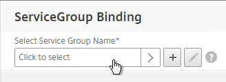
- Select your Director Service Group, and click Select.
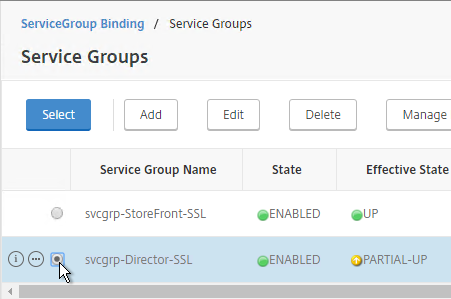
- Click Bind.
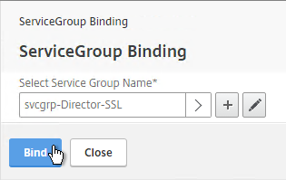
- Click Continue.
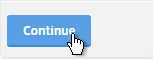
- Click where it says No Server Certificate.
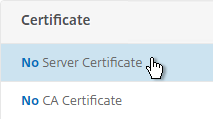
- Click the arrow next to Click to select.
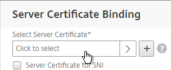
- Select the certificate for this Director Load Balancing Virtual Server, and click Select.
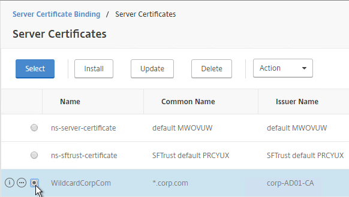
- Click Bind.
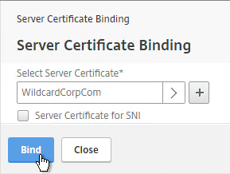
- Click Continue.
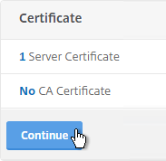
- On the right, in the Advanced Settings column, click Persistence.
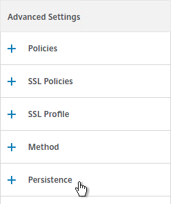
- In the Persistence section, do the following:
- Select COOKIEINSERT persistence.
- Set the Time-out to 0 minutes. This makes it a session cookie.
- Set the Backup Persistence to SOURCEIP.
- Set the Backup Time-out to match the timeout of Director. The default timeout for Director is 245 minutes.
- The IPv4 Netmask should default to 32 bits.
- Click OK.
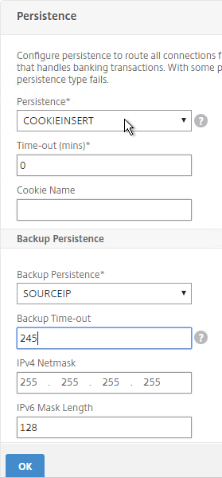
- On the right, in the Advanced Settings section, add the Policies section.
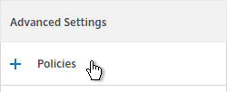
- On the left, in the Policies section, click the plus icon.
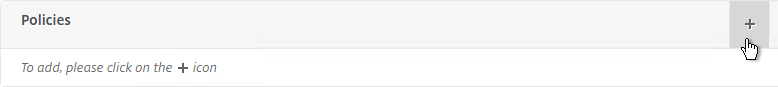
- Select Responder in the Choose Policy drop-down, and click Continue.
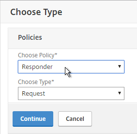
- Select the previously created Director_Redirect policy, and click Bind.
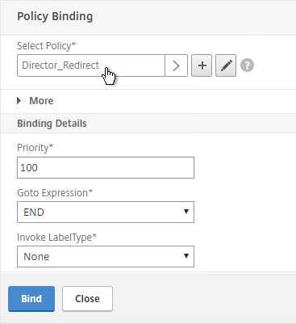
-
If you haven’t enabled the Default SSL Profile, then perform other normal SSL configuration including: disable SSLv3, bind a Modern Cipher Group, and enable Strict Transport Security.
bind ssl vserver MyvServer -certkeyName MyCert set ssl vserver MyvServer -ssl3 DISABLED -tls11 ENABLED -tls12 ENABLED unbind ssl vserver MyvServer -cipherName ALL bind ssl vserver MyvServer -cipherName Modern bind ssl vserver MyvServer -eccCurveName ALL bind lb vserver MyvServer -policyName insert_STS_header -priority 100 -gotoPriorityExpression END -type RESPONSE
SSL Redirect
Do one of the following to configure a redirect from HTTP to HTTPS:
- Add a new HTTP load balancer on port 80 and use Responder to redirect.
- Edit the existing SSL vServer and enable Redirect.
- Add a new HTTP load balancer on port 80 and configure the Redirect URL.
SSL Warning
- If you are doing SSL Offload (SSL on front end, HTTP on back end), when connecting to Director, it might complain about “You are not using a secure connection”.
- To turn off this warning, login to the Director servers, and run IIS Manager.
- On the left, navigate to Server > Sites > Default Web Site > Director.
- In the middle, double-click Application Settings.
- Change UI.EnableSslCheck to false.
CLI Commands
Here is a list of NetScaler CLI commands for Director Load Balancing:
add server Director01 10.2.2.18
add server Director02 10.2.2.100
add server 127.0.0.1 127.0.0.1
add service AlwaysUp 127.0.0.1 HTTP 80
add serviceGroup svcgrp-Director-HTTP HTTP
add ssl certKey wildcom -cert WildcardCorpCom_pem -key WildcardCorpCom_pem
add lb vserver lbvip-Director-SSL SSL 10.2.2.210 443 -persistenceType SOURCEIP -timeout 245
add lb vserver lbvip-Director-HTTP-SSLRedirect HTTP 10.2.2.210 80 -persistenceType NONE
add responder action Director_Redirect redirect "\"/Director\"" -responseStatusCode 302
add responder action http_to_ssl_redirect_responderact redirect "\"https://\" + HTTP.REQ.HOSTNAME.HTTP_URL_SAFE + HTTP.REQ.URL.PATH_AND_QUERY.HTTP_URL_SAFE" -responseStatusCode 302
add responder policy Director_Redirect "http.REQ.URL.PATH.EQ(\"/\")" Director_Redirect
add responder policy http_to_ssl_redirect_responderpol HTTP.REQ.IS_VALID http_to_ssl_redirect_responderact
bind lb vserver lbvip-Director-HTTP-SSLRedirect AlwaysUp
bind lb vserver lbvip-Director-SSL svcgrp-Director-SSL
bind lb vserver lbvip-Director-SSL -policyName Director_Redirect -priority 100 -gotoPriorityExpression END -type REQUEST
bind lb vserver lbvip-Director-HTTP-SSLRedirect -policyName http_to_ssl_redirect_responderpol -priority 100 -gotoPriorityExpression END -type REQUEST
add lb monitor Director HTTP -respCode 200 -httpRequest "GET /Director/LogOn.aspx?cc=true" -LRTM DISABLED -secure YES
bind serviceGroup svcgrp-Director-SSL Director01 443
bind serviceGroup svcgrp-Director-SSL Director02 443
bind serviceGroup svcgrp-Director-SSL -monitorName Director
set ssl serviceGroup svcgrp-Director-SSL -tls11 DISABLED -tls12 DISABLED
bind ssl vserver lbvip-Director-SSL -certkeyName wildcom
bind ssl vserver lbvip-Director-SSL -eccCurveName P_256
bind ssl vserver lbvip-Director-SSL -eccCurveName P_384
bind ssl vserver lbvip-Director-SSL -eccCurveName P_224
bind ssl vserver lbvip-Director-SSL -eccCurveName P_521